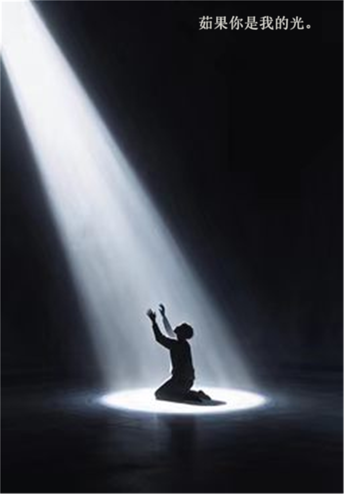

点击任意位置关闭
这是一座关于「感受」的博物馆。这里没有喧闹的展品，只有一种长期被误解的疾病。请放慢脚步，用几分钟，试着走进他们的世界。
在进入这座博物馆之前，你需要像真正的「患者」一样，领取一枚手环。
这些，是许多抑郁症患者曾说过、却很少被听见的话。
抑郁症不是性格缺陷，而是一种真实的疾病。先脱下偏见，再看清它。
那些被误以为是「糖果」的胶囊，是许多人每天吞下的希望。
药物治疗、心理治疗、规律作息与运动、稳定的社会支持，都是被证实有效的方式。规范治疗下，多数患者可以获得显著改善甚至康复。早识别、早就医，是走出灰色的第一步。
拖动下面的滑块，让「灰雾」变浓——这只是一次几分钟的模拟，而对他们来说，可能是日复一日。
有些情绪像失控的水流，汹涌、止不住，旁人却看不见。
旁人看到的，可能只是「情绪化」「小题大做」。而当事人感受到的，是随时可能决堤的内心。理解，从来不是一句「别想太多」就能抵达的。
这些「安慰」看似善意，却可能把人推得更远。点击标签，看看可以怎么说。
把想说的话留在这里，也可以只是安静地看看别人的心事。
如果你是正在经历的人，或想陪伴身边某个重要的人——这些信息可能有用。
免费拨打、无需区号，全国 31 个省份均已开通，由专业人员提供心理咨询、疏导与危机干预。主动求助是勇气，不是软弱。
· 出现持续两周以上的低落、兴趣丧失
· 睡眠、食欲、精力明显改变
· 或有伤害自己的想法
请尽快联系精神科 / 心理科医生，或拨打 12356。
· 倾听，不评判，不催促「想开点」
· 陪 TA 就医，帮 TA 规律作息
· 照顾好你自己，陪伴也需要力气
· 别把「陪着」当成「治好」
如果出现急性自伤、自杀风险等紧急状况，请立即拨打 120 或 110，并尽量不让人独处。

世界本就破破烂烂，我在泥泞的环境逃出直到蜂拥而至的人群都透明了…
直到遇见你，你的出现使我鼓起勇气让封闭多年的内心再次打开，你降落的太突然了…
宝物该有人捧着，你像天外来物一样求之不得，我在不近又不远处，直到别有用心的人都透明了，用明天换你靠近我。
如果你正在经历，请记得：这不是你的错，你也不是一个人在扛。
如果你身边的人正在经历，你的理解和陪伴，可能就是照进灰色的那束光。